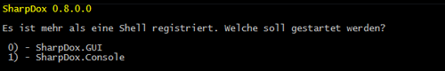
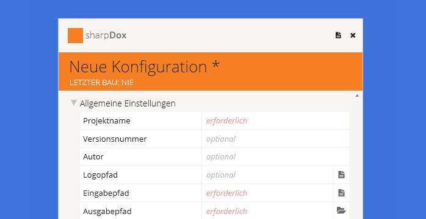

Die Benutzung von sharpDox gestaltet sich, im Gegensatz zu manch anderen Dokumentationstools, als sehr einfach. Nachdem sharpDox heruntergeladen und entpackt wurde, kann es über die Sharpdox.Core.exe gestartet werden.

Entwicklern ist es möglich, für sharpDox neue Benutzeroberflächen zu implementierten. Sind mehrere dieser Benutzeroberflächen im Ordner shells von sharpDox vorhanden, bietet das Programm dem Benutzer eine Auswahl der registrierten Benutzeroberflächen an. Sollte nur eine Benutzeroberfläche benötigt werden, können die übrigen Oberflächen bedenkenlos aus dem shells Ordner entfernt werden.
Es empfiehlt sich sharpDox das erstemal mit der GUI zu starten. Mittels der GUI kann die Konfiguration der eigenen Dokumentation einfach angepasst werden. Je nach registrierten Plugins bietet die GUI unterschiedliche Konfigurationspunkte an.

sharpDox ermöglicht es Entwicklern verschiedene Ausgabeformate für eine Dokumentation zu erstellen. Dies versetzt den Benutzer in die Lage die Ausgabeform der Dokumentation zu beeinflussen (hier ist ein Beispiel zu finden wie ein Exporter erstellt werden kann). Plugins befinden sich im plugin Ordner von sharpDox. Neue Plugins werden durch einen Neustart des Programms registriert und automatisch während des Bauvorgangs ausgeführt.
Wurden alle Einstellungen getätigt und die Konfiguration gespeichert, kann die Dokumentation gebaut werden. Dazu wird über Bauen der Bauvorgang gestartet. Nachdem der Bauvorgang erfolgreich abgeschlossen wurde, befindet sich für jeden registrierten Exporter ein Unterordner im Ausgabepfad, in denen sich die erstellten Dokumentationen befinden.
Viel Spaß mit sharpDox!